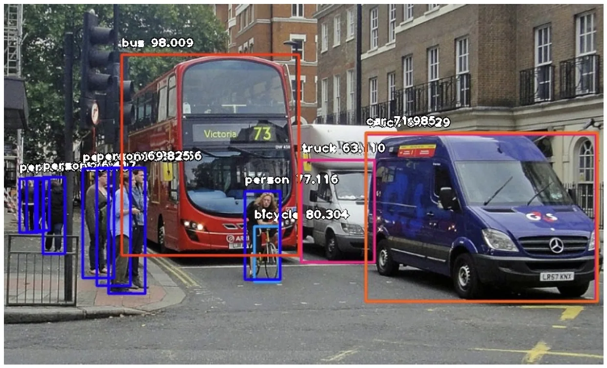
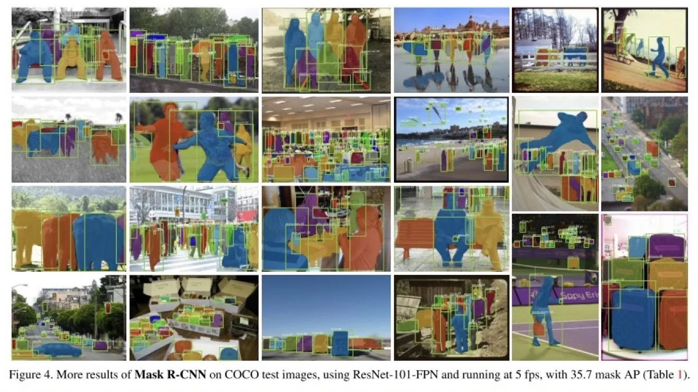
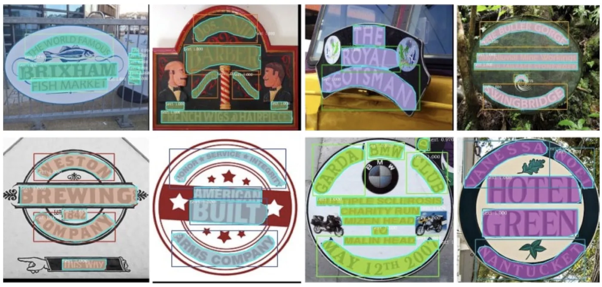
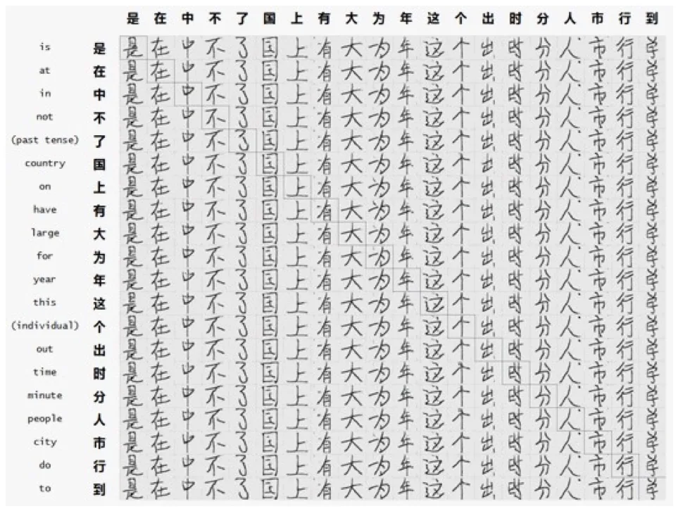
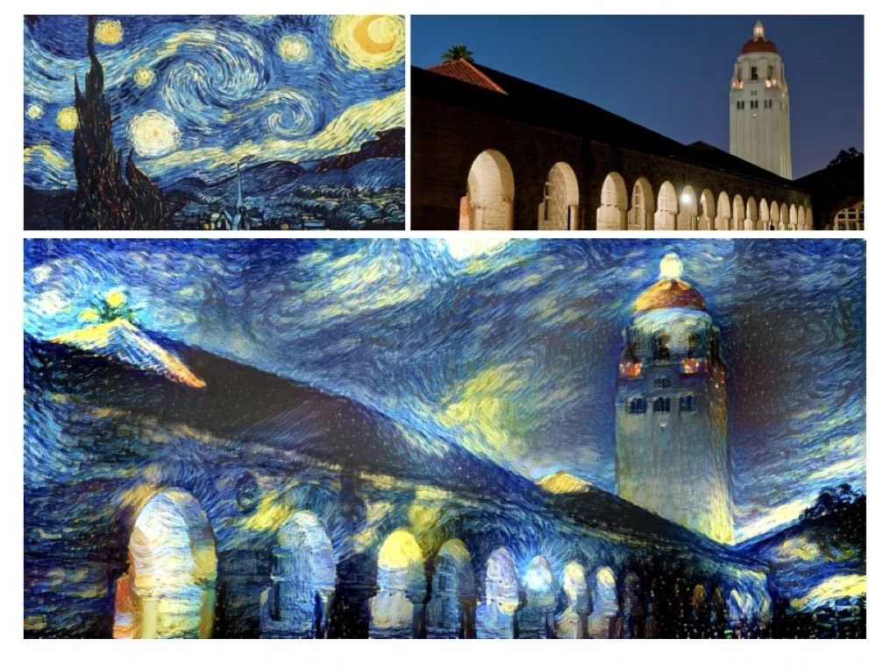
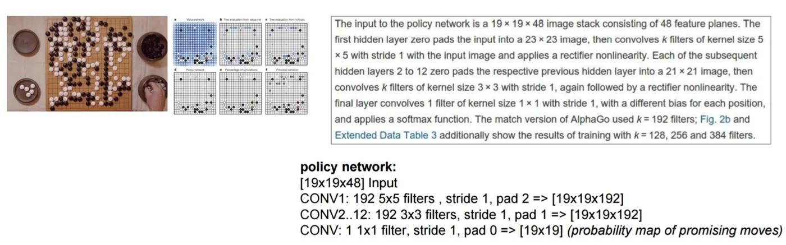
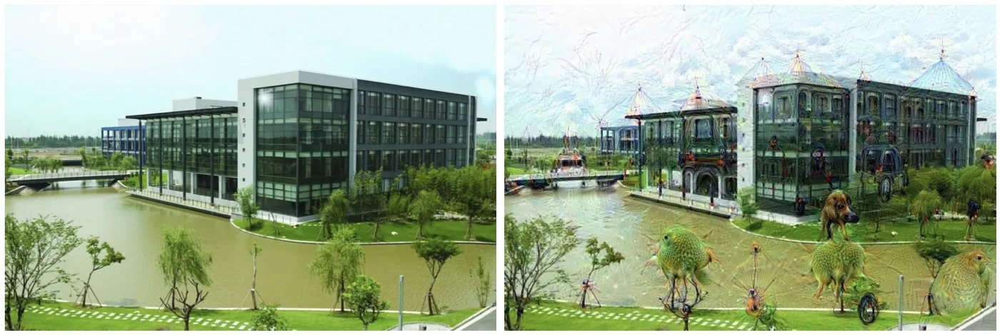

计算机视觉 · 第 6 章 卷积神经网络
6.6 卷积神经网络的应用
前面五节把卷积神经网络讲成了一个「会看图」的模型，这一节看它在真实任务里被用在哪里。课件按任务难度排了一条线：找出目标在哪里（目标检测）、给每个像素分类（图像分割）、读出图中的文字（OCR）、把文字或图像生成出来（图像生成）、把一幅图的风格搬到另一幅图上（画风迁移），再到两个超出常规识别的例子——用 CNN 评估围棋棋局的 AlphaGo，以及把可视化玩成艺术的 Deep Dream。
1. 目标检测（Object Detection）
图像分类回答的是「这张图里是什么」，目标检测进一步回答「有什么、在哪里」——它要在图中找出一个个目标，给出它们的位置框和类别。

注意图中每个框上的两个信息：类别（bus、person、bicycle、truck）和置信度。这里的置信度就是 6.2 节讲的 Softmax 输出——网络对「这个框里是公交车」这件事的把握有多大。目标检测的难点在于目标的数量不固定、大小不一、还会互相遮挡，因此它需要在分类网络的基础上再解决「找位置」的问题。
2. 图像分割
如果说目标检测输出的是一个框，那么图像分割输出的就是每个像素的类别——它要把属于同一个目标的像素精确地划分出来，得到物体的轮廓。课件用的配图来自 Mask R-CNN 的论文。

分割对网络提出了两个额外的要求。一是分辨率：输出要和输入图像逐像素对应，特征图不能一路缩小到底，所以需要 6.3 节的转置卷积这类上采样手段把特征图放大回去。二是上下文：判断一个像素属于什么，往往要看它周围更大范围的证据，这正是空洞卷积擅长的场景。这也解释了为什么 6.3 节要专门讲那两种「非常规」的卷积。
3. OCR 文字识别
OCR 文字识别要从图像中把文字「读」出来：先定位文字所在的区域，再逐字识别成字符。它和前面两类任务一脉相承——定位靠检测，识别靠分类，只是识别的对象从整幅图变成了一个个字符。

值得一提的是，本课程第 6 章之前讲的卷积与池化，正是 OCR 里那两个关键动作的基础：卷积负责提取笔画与结构特征，池化负责容忍字体的位置偏差与轻微形变。6.2 节里池化对汉字「一」的旋转不变性实验，讲的其实就是这件事。
4. 图像生成与画风迁移
卷积神经网络不只能「理解」图像，还能「生成」图像。图像生成要按给定的条件造出一幅新图——例如给定一个汉字，生成它的字形图像。

画风迁移则更进一步：把一幅内容图和一幅风格图结合起来，让输出的图像保持内容图的构图、却带上风格图的笔触与色调——比如把自己的照片画成某位画家的风格。

这两类任务之所以能成立，靠的是卷积神经网络的一个关键性质：浅层学到的多是纹理、笔触一类的「风格」，深层学到的是物体与布局一类的「内容」。分开处理这两层的信息，风格与内容就可以被拆开来重新组合——这也正是 6.4 节结尾那套特征图可视化带给我们的认识。
5. AlphaGo：用 CNN 评估棋局
接下来两个例子超出了「识别图像」的范畴，说明卷积神经网络可以被当作通用的结构化数据处理器来用。
AlphaGo 的做法是：使用 CNN 从 19 × 19 的棋盘图像得到当前棋盘上所有棋子位置的表征，从而评估当前棋局。这句话背后的建模思路很巧妙——把棋盘直接当成一幅 19 × 19 的「多通道图像」，用卷积网络去读它，输出的就是每个落子点的价值。

课件把它的结构抄得很完整，值得逐项对照：输入是 19 × 19 × 48 的图像栈（由 48 个特征平面组成）；第一层先补零把输入扩到 23 × 23，再用 192 个 5 × 5、步长 1 的卷积核得到 19 × 19 × 192（补零 2 正好让 19 变回 19，与 6.1 节的等宽卷积完全一致）；第 2 到第 12 层每个都用 192 个 3 × 3、步长 1 的卷积核，补零 1 同样保持尺寸不变；最后一层只用 1 个 1 × 1 卷积核，得到一个 19 × 19 的落子概率图，也就是棋盘上每个位置「值得下」的概率。正式比赛版本用的 k = 192，论文另外还试过 k = 128、256、384。
这个例子把 6.1 到 6.3 节的知识用了个遍：等宽卷积保持尺寸、1 × 1 卷积改变通道数、Softmax 输出概率分布。它说明卷积神经网络真正处理的是「局部相关、平移不变」的结构化数据，图像只是其中最常见的一种。
6. Deep Dream：从可视化到艺术
最后的例子回到了 6.4 节的特征图可视化。Deep Dream 是谷歌开发的算法，当初只是设计出来帮助研究人员了解每层神经网络在一个给定的图像中到底「看」到了什么。它的做法是反过来利用网络：不再拿网络去识别图像，而是让网络「告诉」我们它想看到什么，然后放大这些响应、迭代地修改图像。后来，这个算法演化成了一种迷幻抽象的艺术形式。

Deep Dream 与 ZFNet 的可视化、6.4 节那套特征图展示，本质上是同一件事的两个方向：前者是把网络内部的响应还原成图像，用来解释模型；后者是把网络内部的响应放大成图像，用来创造图像。这也从侧面说明，卷积神经网络学到的特征确实是「可读」的。
7. 配套编程练习
课件在这一章末尾给出了配套的编程练习：https://github.com/nndl/exercise/，其中 chap5_CNN 目录对应卷积神经网络与图像分类的练习（原课件第 109 张的「课后作业」页，对应幻灯片第 110 张）。
本节小结
- 目标检测在分类的基础上回答「在哪里」：给出目标的位置框、类别与置信度（置信度就是 Softmax 的输出）。
- 图像分割把输出细化到每个像素的类别；它对分辨率与上下文的要求，正好用到 6.3 节的转置卷积（上采样）与空洞卷积（扩大感受野）。课件配图取自 Mask R-CNN 的论文结果。
- OCR 文字识别先定位文字区域、再逐字识别；卷积提取笔画结构，池化容忍位置与形变。
- 图像生成按条件造出新图像；画风迁移把内容图与风格图融合。二者成立的前提是：浅层特征偏「风格」（纹理、笔触），深层特征偏「内容」（物体、布局）。
- AlphaGo 把 19 × 19 的棋盘当作图像，用 CNN 得到棋子位置表征来评估棋局：输入 19 × 19 × 48，CONV1 为 192 个 5 × 5、步长 1、补零 2，CONV2 ∼ 12 为 192 个 3 × 3、步长 1、补零 1，最后 1 个 1 × 1 卷积核输出 19 × 19 的落子概率图；比赛版本 k = 192（论文还试过 128、256、384）。
- Deep Dream 由谷歌开发，最初用来观察每层网络在一幅图中「看」到了什么，后来演化为迷幻抽象的艺术形式——它验证了卷积神经网络学到的特征是可读、可利用的。
- 这一章的配套编程练习在 nndl/exercise 的 chap5_CNN 目录，主题是图像分类。